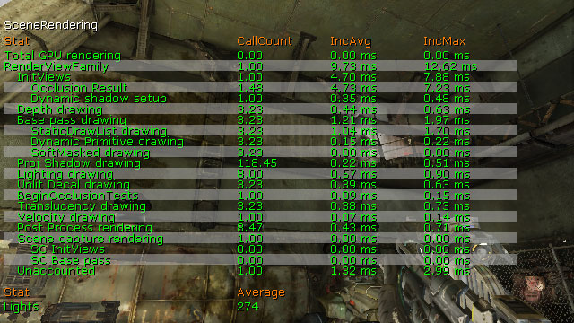
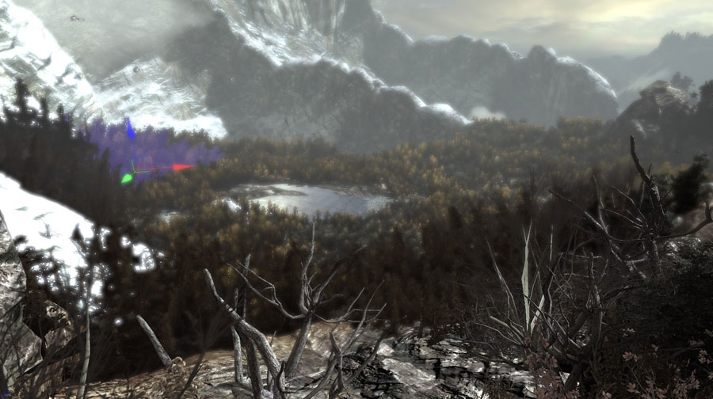
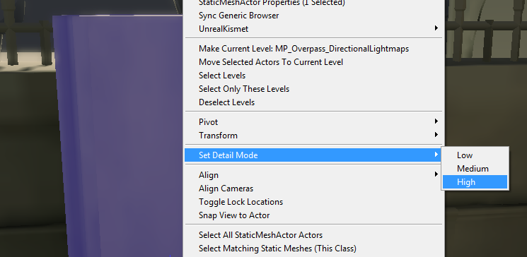

UDN
Search public documentation:
RenderThreadProfilingHomeKR
English Translation
日本語訳
中国翻译
Interested in the Unreal Engine?
Visit the Unreal Technology site.
Looking for jobs and company info?
Check out the Epic games site.
Questions about support via UDN?
Contact the UDN Staff
日本語訳
中国翻译
Interested in the Unreal Engine?
Visit the Unreal Technology site.
Looking for jobs and company info?
Check out the Epic games site.
Questions about support via UDN?
Contact the UDN Staff
UE3 홈 > 퍼포먼스, 프로파일링, 최적화 > 렌더 스레드 프로파일링 및 최적화
렌더 스레드 프로파일링 및 최적화
개요
렌더 스레드 프로파일링
- Trace Render 로는 단일 프레임을 추적합니다. (특히나 퍼포먼스가 확 떨어지는 지역이 있을 때 좋습니다.)
- Sample Profiling: 확 티나지 않는 지극히 평범한 퍼포먼스 테스트에 좋습니다.
STAT SCENERENDERING
STAT SCENERENDERING 명령은 범용 렌더링 통계를 나타냅니다. 렌더링 프로세스에서 일반적으로 퍼포먼스가 느린 지역을 찾아내기에 좋은 시작점이 됩니다.
STAT INITVIEWS
STAT INITVIEWS 명령은 표시여부 컬링(visibility culling) 이 얼마나 걸렸는지, 얼마나 효율적인지에 대한 정보를 나타냅니다. 표시되는 섹션 수가 렌더링 스레드 퍼포먼스에 관해서 제일 중요한 통계이며, 이는STAT INITVIEWS 아래 Visible Static Mesh Elements 에 의해 좌지우지되나, Visivble Dynamic Primitives 역시도 관계가 있습니다.

STAT SCENEUPDATE
STAT SCENEUPDATE 명령은 월드 업데이트에 관련된 정보를 나타내며, 씬에 프리미티브 추가/제거는 물론 라이트 추가/업데이트/제거에 걸린 시간도 포함됩니다.
샘플 작업방식
-
Stat unit실행- 렌더 스레드가 50 ms 걸린다고 나타납니다.
- 그 후
stat scenerendering실행- RenderViewFamily 안이 25 ms 라 나타납니다.
- 렌더 명령이 25 ms 를 차지하고 있다는 것입니다.
- 마지막으로
stat sceneupdate실행- AddLight RT 안에 25 ms 가 보입니다.
- 한 프레임에 10 번 호출되고 있습니다.
- 그러면 브레이크 포인트를 통해 누가 AddLight 를 호출하는지 알아봐야 하겠습니다. 그리고 그 라이트를 추가하는게 왜 그리 느린지 알아봐야 겠죠. 보통 이런 경우는 어떤 라이트가 실제로 필요한 것 보다 많은 작업을 하는 식으로 추가되고 있기 때문입니다. (예로 부착/재부착 등)
렌더 스레드 최적화
레벨 레이아웃
RenderThread 와 관련해 레벨 디자인에 있어 가장 큰 요인은 표시여부(visibility)와 그것이 표시 엘리먼트의 수에 끼치는 영향입니다. 오클루전을 효율적으로 활용하도록 고안된 레벨은 언제고 표시되는 엘리먼터의 수를 제한하기가 훨씬 나을 것입니다. 싱글 플레이어 게임플레이의 경우, 맵을 통해 지그재그식 흐름을 구현하면 언리얼 엔진 3 의 오클루전 기능이 빛을 발할 것입니다. Visibility Culling KR 페이지에 언리얼 엔진 3 에서 사용가능한 컬링 메서드 관련 정보가 수록되어 있습니다.콘텐츠 메이크업
레벨 레이아웃에 추가로, 사용된 메시의 메이크업 방법 역시도 중요합니다. 이 부분에서는 교환 법칙이 적용되는데, 극단적인 방법이라면 쬐그만 재사용가능 메시를 많이 사용하여 렌더링 스레드를 죽여버릴 수도 있고, 다른 쪽 극단이라면 재사용 불가능한 큰 메시를 조금만 사용하는 것입니다. 균형을 어떻게 맞출 지에 대한 아이디어는, 발매된 GOW/UT3/GOW2 레벨이 어떤 식으로 되었는지 참고해 보는 것도 좋습니다. 최적의 방법이라면 목표로 삼는 대표 테스트 레벨을 실제로 구성한 다음 타겟 플랫폼에서 프로파일링해 보는 것입니다. 넓은 지역이 보이는 전망지에서는 섹션 수를 조심스레 제어하지 않으면 큰 문제가 될 수 있습니다. Gears2 의 SP_Assault 는 효율적인 전망지의 뛰어난 예인데, 다수의 나무를 하나의 메시로 병합시켜 (선택해 보면 알 수 있습니다) 섹션 수를 낮게 한 것입니다. 이런 기술은 물론 그 원거리까지 플레이어가 갈 수 없을때만 쓸 수 있겠습니다. 플레이어가 갈 수 있는 곳이라면, 좀 더 적극적인 LOD 시스템을 사용해 줘야 합니다.
충실도 감소
분할화면을 통해서 월드의 두 곳을 보면 렌더스레드가 많은 작업을 두 번 하게 됩니다. 보통 싱글플레이어의 경우 최대 속도로 게임이 실행되기에, 부하를 두 배로 걸려면 뭔가 해 줘야 하겠죠. 충실도를 낮춰 게임에 역효과를 줄 지역을 찾아내는 게 핵심입니다. 여러 경우에다 특수 코드를 써 넣어야 겠는데, 게임플레이 코드가 보통 오브젝트/효과 생성을 담당하기 때문입니다. 엔진의 몇몇 시스템에는 설정 가능한 부분도 있지만, 대부분은 특정 지역을 찾아서 끄거나 / 양을 줄이는 일입니다. 충실도를 줄일 수 있는 주요 지역은:- 데칼: 한 번에 살아 움직이는 것들의 최대 수를 줄입니다.
- 오브젝트 생존 기간: (잔해(Gib)같은) 효과형 오브젝트의 수명을 줄입니다.
- 스켈레탈 메시에 붙일 수 있는 데칼 수를 줄입니다.
- AI 캐릭터에 대해서는 비주얼 작업을 많이 하지 마십시오. (무리(Horde)를 플레이한다 칠 때, 각 총알 임팩트마다 내뿜는 데칼 스프레이나 효과를 줄 필요는 없을겁니다.)
분할화면 디테일 모드
최후의 보루로써 디테일 모드를 사용하여 분할 화면에서는 표시되지 않게 할 메시를 선택하는 기능이 있습니다. Gears2 에서는 모든 멀티플레이어 맵에 대해 패스를 수행하여 비주얼-전용 디테일 메시에는 High 디테일로 마킹하는 작업을 해 줬습니다.
High 디테일 패스가 완료되면, 분할화면용 디테일 모드 세팅을 설정합니다:[SystemSettingsSplitScreen2] DetailMode=1이 세팅은 High 디테일 모드로 설정된 메시는 분할 화면에서 그리지 않거나 렌더링 부하를 걸지 않게 될 것입니다.